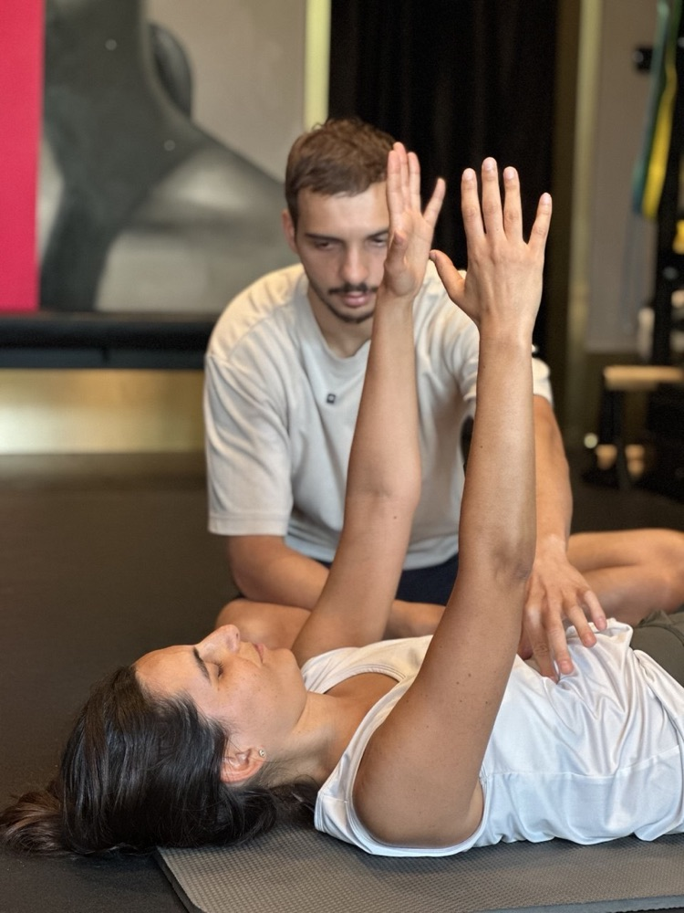
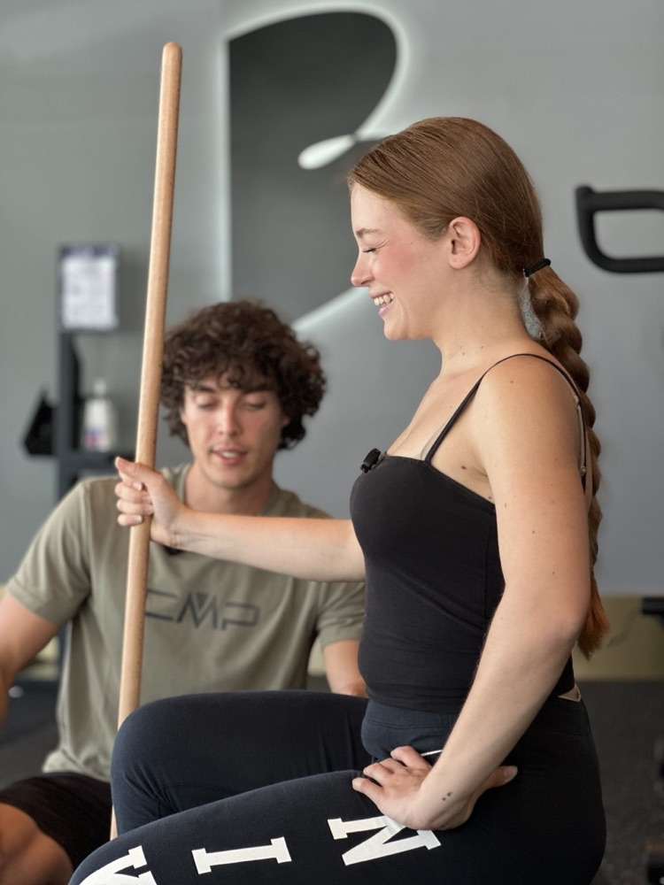
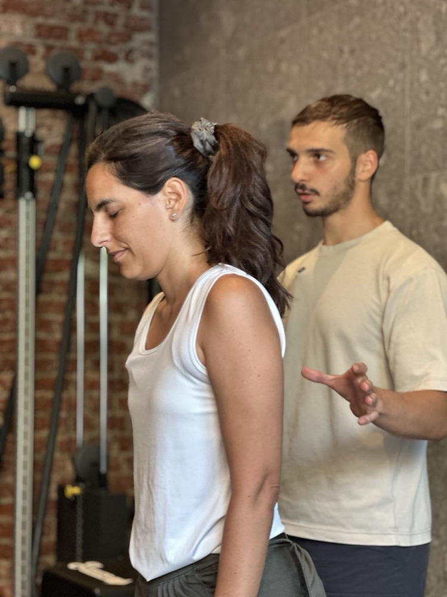
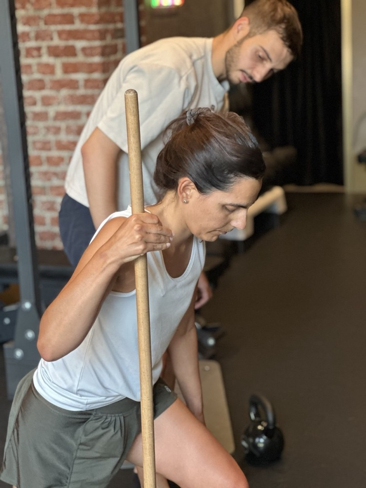
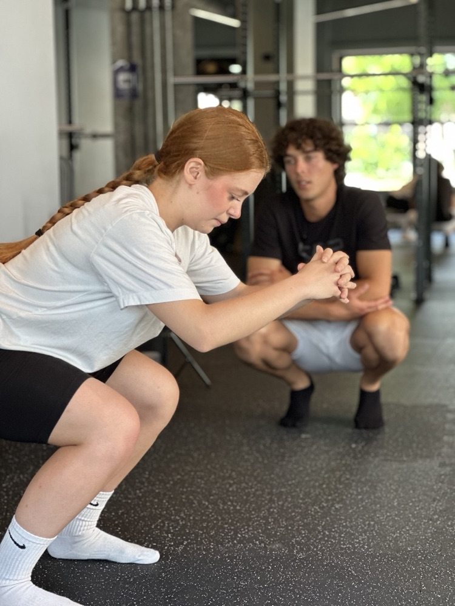
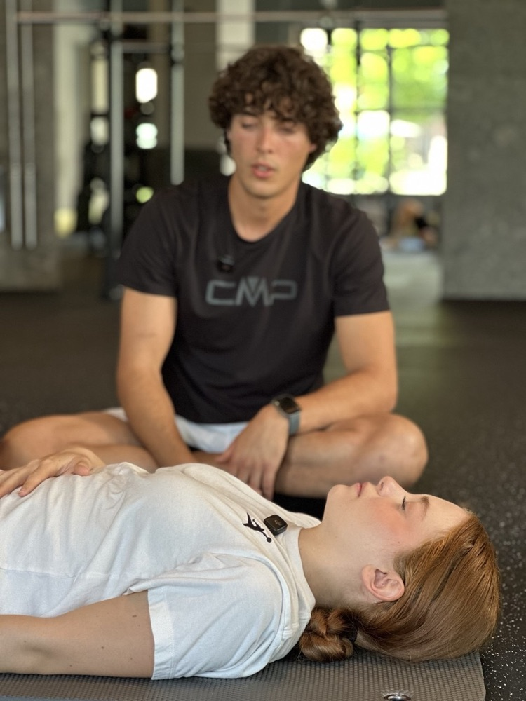
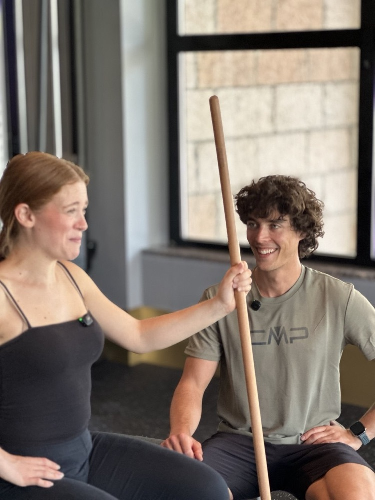

Muoversi con Me. nasce da un’idea semplice: ogni corpo ha una storia, e nessun percorso può funzionare se non parte da lì. Per questo non esistono tabelle uguali per tutti, ma un metodo che si costruisce intorno alla persona.
About me ›Educazione al movimento
Non vogliamo semplicemente farti allenare.
Vogliamo darti gli strumenti per imparare a prenderti cura del tuo corpo nel tempo.


Per imparare a
gestire il tuo allenamento.

Consulenza gratuita

Lezione di prova

Allenamento in presenza

Coaching online

Sempre più autonomia
Compila il form e
prenota la tua consulenza
gratuita.
Nessuna tabella uguale per tutti: ogni fase è costruita su di te, sul tuo ritmo e sui tuoi obiettivi.
Un primo incontro per ascoltarti: la tua storia, le tue abitudini, cosa vorresti cambiare e cosa ti ha frenato finora. Nessun impegno, solo una chiacchierata per capire da dove partire.
Ci muoviamo insieme per la prima volta. È il momento per sentire il metodo sulla tua pelle, capire come risponde il tuo corpo e scoprire se Muoversi con Me. fa per te.
Costruiamo un percorso su misura, tra movimento consapevole, alimentazione e ascolto di sé. Passo dopo passo, con obiettivi chiari e realistici, e senza fretta.
L’obiettivo è che tu non abbia più bisogno di me ogni giorno. Diventi indipendente, e ci rivediamo per lezioni di allineamento: momenti per fare il punto, correggere la rotta e tenere viva la motivazione.
Muoversi con metodo. Un programma di allenamento che educa e trasforma.